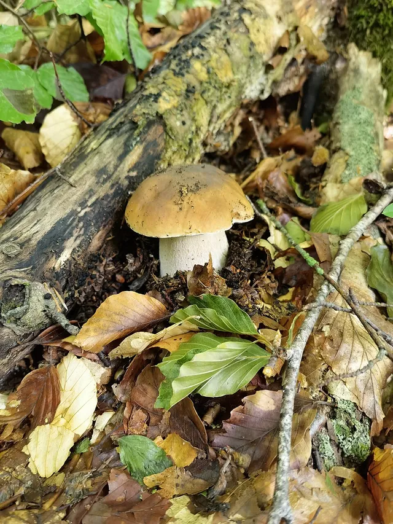

Main course
Porcini and barley risotto
Porcini and barley risotto is made with wild porcini.

How do you make porcini and barley risotto?
Pearl barley cooked slowly with porcini and stock.
Wild ingredients
- Porcini (Boletus edulis): in season August to October
Watch the recipe

Video: Citytv on YouTube